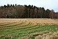

residue
role

Source: Wikipedia
Wikipedia Page (Something wrong with this association? Let us know.)
Wikidata Page (Something wrong with this association? Let us know.)
Occurs in:
- soil_plant_residue_water_evaporation__volume_flux
- crop_residue_decomposition_pool_carbon_respiration__time_integral_of_mass_flux
- crop_residue_pool_root-and-rhizodeposit_biomass_addition__one-year_time_integral_of_mass_flux
- crop_residue_pool_root-and-rhizodeposit-as-carbon_decomposition__one-year_time_integral_of_mass_flux
- above-ground_crop_residue~retained__mass-per-area_density
- above-ground_crop_residue-as-carbon_decomposition__mass
- above-ground_crop_residue_pool-as-carbon_decomposition__one-year_time_integral_of_mass_flux
- forage-or-residue~removed_nitrogen__mass_fraction
- field_residue~remaining_nitrogen_at-harvest__mass-per-area_density
- forage-or-residue~removed_at-harvest__mass-per-area_yield
- forage-or-residue~removed_nitrogen_at-harvest__mass-per-area_yield
- above-ground_residue~remaining_at-harvest__mass-per-area_density
- above-ground_soil_residue_pool_crop_residue_addition__mass-per-area_density
- soil_surface_residue~standing_carbon_nitrogen__mass_ratio